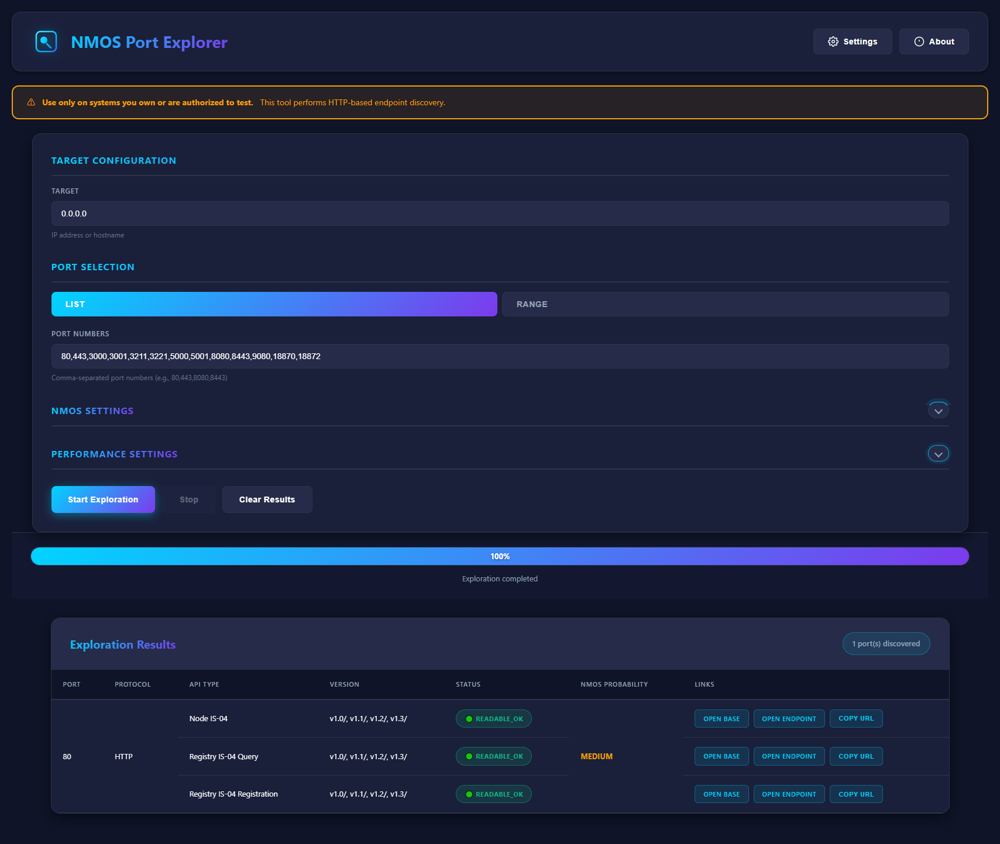

NMOS Port Explorer
NMOS APIポート・エンドポイントスキャナー
NMOS APIポート・エンドポイントスキャナー
概要
NMOS Port Explorerは、指定したIPアドレスまたはホスト名に対して複数のポートをスキャンし、Node・Registry（Query / Registration）・ConnectionといったNMOS APIエンドポイントを自動検出するブラウザベースのツールです。検出した各ポートについて、プロトコル・対応バージョン・応答ステータス・NMOSらしさのスコアを一覧表示します。
機器のポート構成が不明な場合や、ネットワーク上に想定外のNMOSサービスが公開されていないかを確認したいシステムインテグレーション・監査の場面で特に役立ちます。ツール内には「所有または許可されたシステムでのみ使用してください」という注意書きが常に表示されます。
主な機能

クイックスタート
ブラウザでPort Explorerを開く
インストール不要です。ツールのURLにアクセスするだけですぐに使い始められます。
ターゲットを指定
スキャン対象のIPアドレスまたはホスト名を入力します。
ポートを設定
カンマ区切りのポートリスト、または範囲指定でスキャン対象ポートを設定します。必要に応じてNMOS Settings・Performance Settingsも調整できます。
スキャンを実行して結果を確認
「Start Exploration」をクリックすると、検出されたエンドポイントのプロトコル・バージョン・ステータスが一覧表示されます。各行のリンクからベースURLやエンドポイントを直接開いたり、URLをコピーできます。